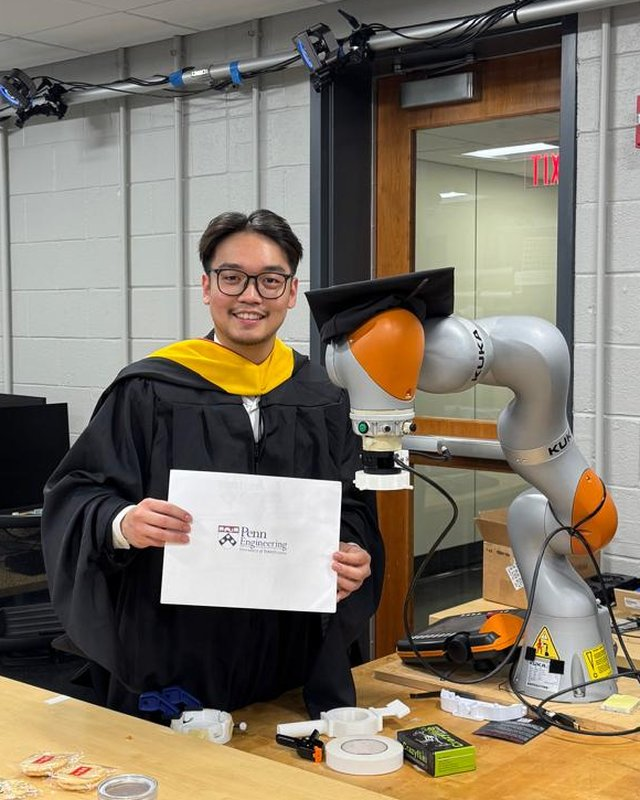
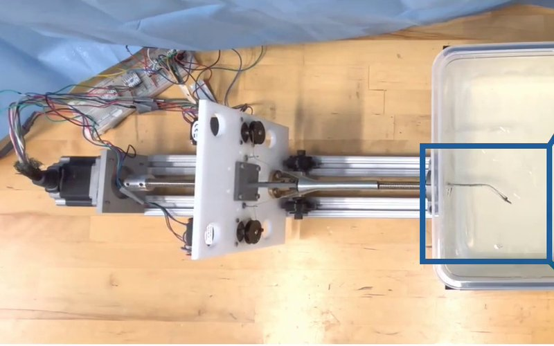
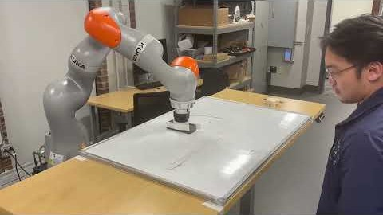
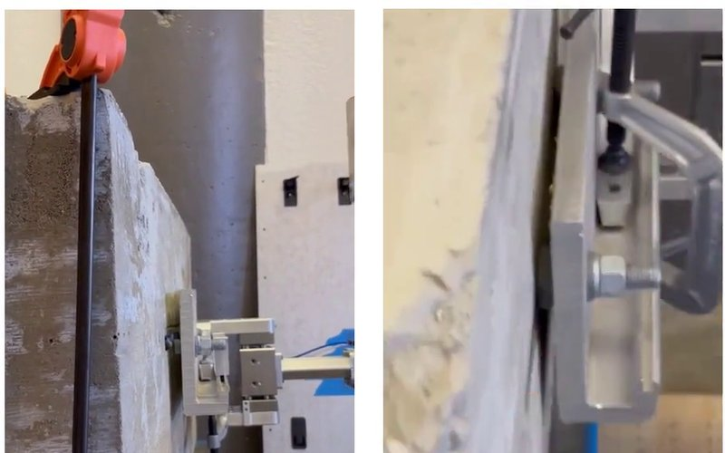
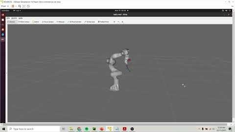

Davin Tjandra
Robotics Software Engineer at Intrinsic
I'm a robotics engineer working on robot control, especially for tasks where the robot is in contact with its environment or working in a collaborative manner. My work combines classical control with learning: compliance and force control, stable dynamical systems, and safety filters that let learned policies run on robot arms.
I'm currently a Robotics Software Engineer at Intrinsic, where I develop and deploy robotic solutions for industrial clients. Before that, I worked on steerable needles for medical procedures, compliance control on the KUKA iiwa, and force-controlled robot arms for construction. I hold an M.S. in Mechanical Engineering (Mechatronics and Robotic Systems) from the University of Pennsylvania and a bachelor's in Mechanical Engineering (cum laude) from the University of Indonesia.

Selected projects
Control, learning and hardware work from research and industry.

LiRA: Reactive Arm Control for Learned Policies
A control layer that lets a pretrained diffusion policy drive different robot arms while avoiding collisions and moving obstacles.

Steerable Tape-Spring Needle
A needle that makes 15° to 150° turns through tissue with a turn radius as low as 3 mm, steered manually and robotically.

Passive Compliance Control with Force Regulation
A passive impedance controller with an energy tank on the KUKA iiwa for stable contact-rich and collaborative tasks.

Force Control and Imitation Learning for Bracket Installation
Compliance control and a learned insertion policy for construction robot arms, reaching a 95% installation success rate.

Depth Completion for RGB-D SLAM
A network that turns sparse LiDAR and a monocular camera into dense depth, used to improve ORB-SLAM2 accuracy.

Control and Planning on the Franka Panda
Kinematics, velocity control and path planning with camera-based object detection for pick-and-place.
Earlier work
- 4-Wheeled Mecanum Drive Mobile Base UPenn · 2023 WiFi control and localisation on ESP32, with ESP-NOW cutting wiring by 80%.
- Soft Actuator and Variable Stiffness Link Bachelor's thesis · 2022 A pneumatic silicone actuator producing 9 N of lift at 37 kPa, with 3× stiffness when locked.
- Cable-Driven Teleoperated Robot Arm Univ. of Indonesia A redesign that moves the motors to the shoulder, with a 20× torque elbow pulley.
- Shell Eco-marathon Virtual Off-track 2021 Topology optimization (54% average mass reduction) and vortex generators (14.7% less drag).
- High-Torque Conversion E-Bike 2021–2022 A self-recharging conversion kit with 8.75× torque, patented in Indonesia.
Experience
-
2025 – Present
Robotics Software Engineer
Intrinsic · Mountain View, CAFactory of the Future and Performance & Reliability teams. Building and deploying robotic solutions for industrial clients, from simulation to on-site deployment.
-
2025
Teaching Assistant
Learning and Control for Adaptive and Reactive Robots, UPennHelped launch the graduate course and set up its PyBullet, ROS2 and MATLAB simulation frameworks.
-
2024 – 2025
Research Assistant
Figueroa Robotics Lab, UPennPassive impedance control with energy tanks and learned dynamical systems on the KUKA iiwa.
-
Summer 2024
Control Engineer
Raise Robotics · San Francisco, CAForce control, behavior trees and imitation learning for construction bracket installation.
-
2023 – 2025
Research Assistant
MODLAB, UPennLed the steerable needle prototype, from the steering hardware to kinematics, planning and ROS integration.
Publications
-
Steerable Tape-Spring Needle for Autonomous Sharp Turns Through TissueICRA 2025 · preprint on bioRxiv
-
High-Torque, Self-Recharging Conversion E-Bike with Knockdown System (Indonesian patent)Indonesia Simple Patent S00202111212 · 2021
-
Development of a Soft Actuator Integrated with a Variable Stiffness LinkBachelor's thesis, Universitas Indonesia · 2022
Awards
- Best Presenter, INSITEF 2022
- Safety Award Runner-Up, Shell Eco-marathon Virtual Off-track Asia 2021
- Research Grant, Tanoto Student Research Award 2021
- Finalist (5th place), ITS Integrated Petroleum Days 2021
- Excellence Award, TAFE NSW 2019